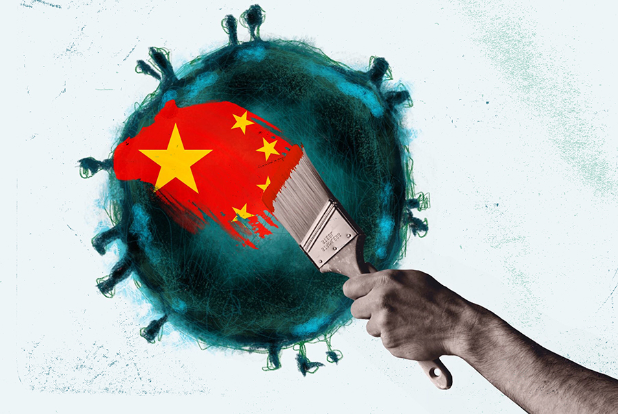
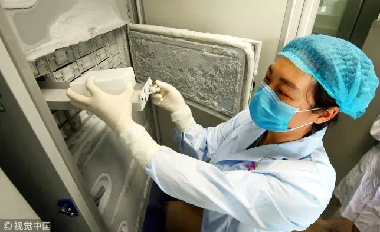
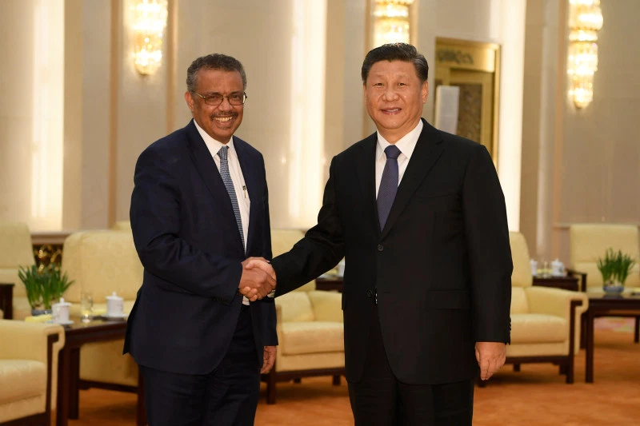

~CHINESE VIRUS~
As the coronavirus circles the globe, it's demonstrating a frightening token of exactly how interconnected our reality has become. The infection has moved along our worldwide gracefully chains, and it very well may be halted distinctly with worldwide collaboration. Be that as it may, the war of words between the U.S. also, Chinese authorities a month ago shows how the pandemic can draw out the most exceedingly terrible in the two nations. While the talk has subsided fairly, there is currently an opening for the two countries to invert course, and they should act quickly—especially in cooperating to create antibodies, multiply life-sparing clinical hardware, and keep open imperative worldwide flexibly chains. It is not really amazing, at that point, that when COVID-19 went onto the scene, it would be profoundly politicized by the two countries. A nearby partner of U.S. President Donald Trump recommended that the infection had been made by China in a biochemical research center in Wuhan. A Chinese government representative countered that the malady was brought to Wuhan by visiting the U.S. Armed force workforce. A senior U.S. official freely bragged that the emergency would take producing employments back to the United States. As episodes spread in California and New York, Chinese authorities displayed their fun at others' expense. Allegations of concealments and ineptitude are flying in a challenge to vilify the other and show that their separate frameworks are progressively powerful to adapt to the difficulties presented by the pandemic.
U.S.- China relations had pointedly crumbled sometime before the disclosure of a strange infection in the Chinese city of Wuhan in late December. The Trump organization raised its assaults on China over the coronavirus, as U.S. authorities freely asserted that Beijing hid and limited the spread of the malady inside its outskirts until it was past the point where it is possible to stop a worldwide flare-up. President Donald Trump and Secretary of State Michael Pompeo considered the ailment the "Chinese infection" at a White House news meeting, dismissing analysis from Beijing and inside their own nation that the term is hostile. Pompeo requested the Chinese government discharge more information on the infection's spread, saying lives could be in danger in any case. "This straightforwardness, this continuous data sharing isn't about political increases or reprisal. It's tied in with protecting individuals," Pompeo said at the White House. Prior in the day, Defense Secretary Mark Esper said that China's guard authorities didn't react to offers of U.S. help as right on time as of January. "On the off chance that the Chinese government had been increasingly straightforward right off the bat, we're talking pre-winter, December at any rate, we would all - we all, all the countries of the world - would have had the option to get our arms around this and contain it in China where it started and forestall its spread far and wide," Esper said on Fox News.
A lot of National Security Council arguments got by Bloomberg News blame China for a "conceal" by concealing updates on the episode from its kin and the world for quite a long time and calls the U.S. the "best compassionate people the world has ever known." Chinese authorities communicated their shock at the remarks from Trump authorities. Geng Shuang, China's Foreign Ministry representative, said his nation has been consistently telling the U.S. of the improvements for the flare-up since as right on time as Jan. 3. He likewise highlighted Trump's prior tweets on the correspondence with China. "I wonder why the U.S. out of nowhere changed its tone and betrayed us," Geng said at an instruction Friday. "Confronted with the COVID-19 pandemic, the U.S. endeavor of fault moving won't resist to contain the ailment at home or join the global network in battling the pandemic together." U.S. authorities face expanding objections from states, medicinal services suppliers, and the overall population that the nation is not ready for the flare-up to exacerbate, with deficiencies of everything from test units to gloves and covers and emergency clinics ventilators need to treat the seriously sick. The analysis of China's dangers heightening strains with the nation's decision Communist Party, which has without proof blamed the U.S. Armed force of making the lethal infection. Trump has more than once referenced the talk at news meetings and has freely denied it. Pompeo said that China, alongside Russia and Iran, is among nations spreading disinformation about the infection. 
China solidly dismissed US President Donald Trump's interest to permit an American group into Wuhan to explore the roots of the novel coronavirus, saying it was additionally a "casualty and not an offender" of the COVID-19. Depicting the novel coronavirus as a plague, Trump on Sunday said that he isn't content with China where the pandemic developed in December a year ago in Wuhan, the capital of focal China's Hubei territory. "We refer to them as Chinese quite before. We need to go in. We need to perceive what's happening. What's more, we weren't actually welcomed, I can disclose to you that," Trump told columnists. The US has propelled an examination concerning whether the dangerous infection "got away" from the Wuhan Institute of Virology.
Responding to Trump's remarks, Chinese Foreign Ministry representative Geng Shuang told a media preparation here that "the infection is the shared adversary for all humanity". "It might show up whenever anyplace on the planet. Like some other nation, China is assaulted by this infection. China is a casualty rather than a guilty party. We are not collaborators for this infection," he said in a hard-hitting reaction to Trump's arrangement to send a US test group. Geng stated China has been working in an open, and capable way to stop the spread of the COVID-19".
Countering US government officials' attestations that China ought to be sued for such huge numbers of passings on the planet, Geng stated, "I don't recall there is any priority" for such an arraignment. Highlighting H1N1 flu which was distinguished in US 2009 just as HIV/AIDS and the 2008 budgetary emergency in America which transformed into a worldwide financial emergency, Geng asked, "did anybody ask US responsibility?" About claims that the infection started in Wuhan, Geng said "birthplace of the infection is a genuine logical issue, which requires an evaluation from researchers. We trust Australia (will) take a gander at the issue in a target and careful way." On French Nobel prize-winning researcher Luc Montagnier's comments that the COVID-19 infection originated from a lab, and is the aftereffect of an endeavor to make immunization against HIV/AIDS, Geng said various researchers and the WHO said there is no proof for such a claim. Referring to the meeting of Yuan Zhiming, of the Wuhan Institute of Virology (WIV), Geng said he denied that the COVID-19 has gotten away from the lab. 
Geng likewise discredited Trump's monetary counselor Peter Navarro's charges that China is accumulating fundamental clinical apparatus required in emergency clinics to treat coronavirus patients. From March 1 to April 17, China has given 1.64 billion veils, 29.19 million careful defensive suits, 156 intrusive ventilators, and 4254 non-obtrusive ventilators. Navarro should quit defaming and center more around containing the spread of COVID-19 in the US
US President Donald Trump cautioned China that it should confront results in the event that it was "intentionally mindful" for the coronavirus pandemic, as he tightened up analysis of Beijing over its treatment of the episode. "In the event that it was a misstep. Be that as it may, on the off chance that they were intentionally capable, better believe it, I mean, at that point without a doubt there ought to be outcomes," Trump said. He didn't expound on what activities the United States may take. Trump and senior assistants have blamed China for an absence of straightforwardness after the coronavirus broke out toward the end of last year in its city of Wuhan. He suspended guide to the World Health Organization blaming it for being "China-driven." It was the most recent U.S. volley in a war of words between the world's two greatest economies, demonstrating expanded strains in relations when specialists state an extraordinary degree of collaboration is expected to manage the coronavirus emergency.